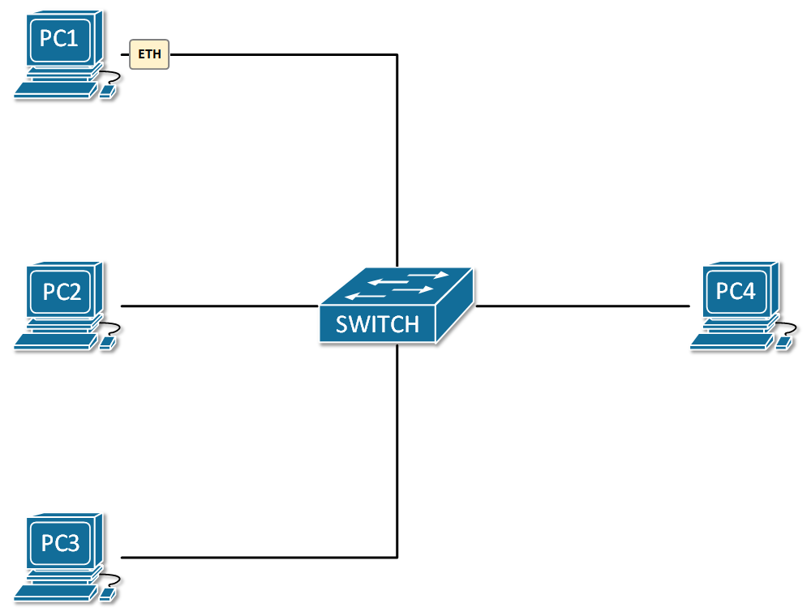
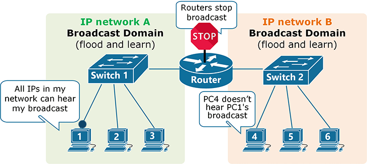
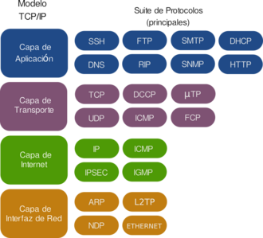
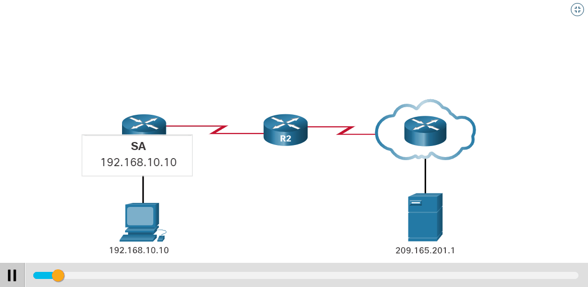
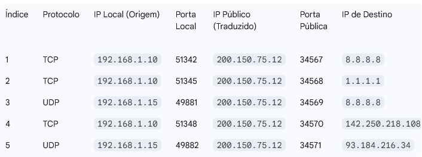

Entendendo os Protocolos IPv4 e as Máscaras de Rede
Imagine uma sala de reuniões gigante com milhares de pessoas. Se alguém grita "MARIA!", todas as Marias da sala respondem, e todas as outras pessoas precisam parar para ouvir a gritaria.
Essa "gritaria" em uma rede é chamada de Broadcast. É uma mensagem enviada para TODOS os dispositivos da mesma rede local.
Broadcasts são úteis para certas funções (como descobrir endereços), mas em uma rede muito grande, o excesso deles (um "broadcast storm") pode travar tudo.
Como vimos, um Switch é inteligente para entregar mensagens diretas (unicast). Mas quando ele recebe uma mensagem de broadcast, sua única opção é encaminhá-la para TODAS as suas portas.
Isso significa que todos os dispositivos conectados a um ou mais switches interligados formam um único e grande Domínio de Broadcast. A "gritaria" de um é ouvida por todos.
Para resolver o problema da "gritaria" e organizar a rede, precisamos dividi-la em "salas" menores e isoladas. Em redes, chamamos isso de segmentação.
O dispositivo que faz essa divisão, criando barreiras para os broadcasts, é o Roteador.
A regra de ouro: Roteadores NÃO encaminham broadcasts de uma rede para outra.
Cada porta de um roteador conecta-se a uma rede diferente e cria um domínio de broadcast separado e isolado. A "gritaria" de uma sala não passa para a outra.
Ok, agora temos "salas" (redes) separadas. Mas como um computador em uma sala envia uma mensagem para outro em uma sala diferente?
Precisamos de um sistema de endereçamento lógico, como CEPs e números de apartamentos, que funcione entre as salas. É aqui que entram os Protocolos.
Um protocolo é um conjunto de regras que governa como os dados são formatados e transmitidos. É a "linguagem" que os dispositivos usam para se comunicar de forma organizada.
O protocolo que cuida do endereçamento lógico entre redes diferentes é o IP (Internet Protocol).
| Característica | Switch | Roteador |
|---|---|---|
| Função | Conecta dispositivos na mesma rede. | Conecta redes diferentes. |
| Endereço | Usa Endereço MAC (físico). | Usa Endereço IP (lógico). |
| Broadcast | Encaminha para todos (cria o domínio). | Bloqueia e isola (separa os domínios). |
A internet funciona com uma suíte (conjunto) de protocolos. O IP é o responsável pelo endereçamento e roteamento, como se fosse o serviço de correios que só se preocupa com o CEP de origem e destino.
O Endereço IP é um número único que identifica um dispositivo em uma rede, permitindo que os dados o encontrem. Vamos focar na versão mais comum: o IPv4.
Um endereço IPv4 é um número de 32 bits, dividido em 4 blocos de 8 bits (octetos), representados em decimal (0 a 255).
Exemplo: 192.168.1.10
Vamos ver como o número 192 é formado por 8 bits.
Digite um número de 0 a 255:
Com aproximadamente 4,3 bilhões de endereços, o IPv4 se esgotou. Isso levou à criação do NAT e do IPv6.
É o endereço único no mundo que seu roteador usa na internet.
São endereços usados apenas dentro da sua rede local (podem se repetir em outras casas).
O NAT (Network Address Translation) permite que vários dispositivos com IPs privados compartilhem um único IP público para acessar a internet.
O roteador não troca apenas o IP. Ele também troca a porta de origem por uma porta aleatória e cria uma entrada em sua Tabela NAT (ou Tabela de Estado).
[IP Privado:Porta Original] ↔ [IP Público:Porta Traduzida]
Quando a resposta chega no IP público e na porta traduzida, o roteador consulta a tabela, descobre qual era o IP/Porta original e encaminha o pacote para o dispositivo correto na rede interna. É um processo stateful (com estado).
| Faixa de IP | Uso Comum |
|---|---|
10.0.0.0 - 10.255.255.255 | Grandes redes corporativas. |
172.16.0.0 - 172.31.255.255 | Redes de médio porte. |
192.168.0.0 - 192.168.255.255 | Redes residenciais. |
Imagine uma empresa com 2000 funcionários que recebe do provedor uma única rede gigante, como a 10.0.0.0/8. Se todos os 2000 dispositivos estiverem na mesma rede, teremos um enorme domínio de broadcast.
A "gritaria" de um dispositivo seria ouvida por todos os outros 1999, causando lentidão. Além disso, como separar o departamento de Vendas do Financeiro por segurança?
A solução é pegar essa rede grande e dividi-la em redes menores e gerenciáveis: as sub-redes.
Podemos criar uma sub-rede para Vendas, outra para o Financeiro, outra para a TI, etc. Cada uma será um domínio de broadcast separado, isolado por um roteador.
Mas como fazemos essa divisão matematicamente? Qual ferramenta usamos?
O Endereço IP é dividido em duas partes: uma que identifica a Rede e outra que identifica o Dispositivo (Host).
A Máscara de Sub-rede é a ferramenta que define onde essa divisão acontece. Ao "puxar" a linha divisória, nós "emprestamos" bits da parte de Host para criar novas sub-redes.
A máscara é uma sequência de bits '1' (que representam a parte da Rede) seguida por bits '0' (que representam a parte do Host).
Exemplo: 255.255.255.0 em binário é:
11111111.11111111.11111111.00000000
Os 24 bits '1' definem a rede, e os 8 bits '0' definem os hosts dentro dela.
Para descobrir o "nome" da rede (o endereço de rede) de um IP, o computador realiza uma operação lógica "E" (AND) entre o IP e a Máscara.
| Regras do AND | ||
|---|---|---|
| 1 AND 1 = 1 | 1 AND 0 = 0 | 0 AND 0 = 0 |
IP: 192.168.1.10 | Máscara: 255.255.255.0
IP: 11000000.10101000.00000001.00001010
Máscara: 11111111.11111111.11111111.00000000
-------------------------------------------------- (AND)
Rede: 11000000.10101000.00000001.00000000
= 192.168.1.0
A notação CIDR simplifica a máscara contando o número de bits '1'.
255.255.255.0 = 24 bits '1' = /24192.168.1.10 com máscara 255.255.255.0 vira 192.168.1.10/24.Originalmente, as máscaras eram fixas de acordo com a "Classe" do IP (A, B, C). Hoje, o CIDR nos dá flexibilidade total para criar sub-redes de qualquer tamanho.
O primeiro endereço da faixa (hosts em '0'). Identifica a rede. Ex: 192.168.1.0/24.
O último endereço da faixa (hosts em '1'). Fala com todos na rede. Ex: 192.168.1.255/24.
Estes dois endereços não podem ser usados em dispositivos.
A faixa 127.0.0.0/8, especialmente 127.0.0.1 ("localhost"), é usada para um dispositivo "falar consigo mesmo", essencial para testes de software.
Digite um IP e escolha a máscara para ver as informações da sub-rede.
Seu PC (192.168.1.10/24) quer acessar www.google.com (8.8.8.8). O que acontece?
Vamos ver a jornada passo a passo.